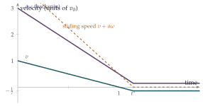

STEP III 1997, Question 10
Read the question before you go on. It is in the STEP Support Programme’s question database: step.maths.org/questions/97-s3-q10
The hook
Press down on the back of a marble with your finger so that it squirts forwards while spinning backwards. It slides away from you, slows, stops, and then, as if it had changed its mind, rolls back. Snooker players use the same effect in the “screw” or “draw” shot, hitting the cue ball low so that it spins backwards, stops on hitting the object ball, and comes back.
The question asks for the exact amount of backspin that makes the marble stop dead, and the amount that makes it return at one-seventh of its starting speed. The calculation tracks two quantities, linear and angular velocity, both changed by the same frictional force. Behind it there is a beautiful shortcut: one combination of the two is not changed by friction at all.
Rotational dynamics was removed from the STEP specification in 2019. All you need here is: a solid sphere of mass \(m\) and radius \(a\) has moment of inertia \(I = \frac25ma^2\) about a diameter, and a torque \(\tau\) changes its angular velocity according to \(I\dot\omega = \tau\), the rotational version of \(m\dot v = F\).
Before you start
The marble moves forwards at \(v\) and spins backwards at \(\omega\). How fast is the bottom point of the marble moving over the table? Which way does friction act?
The bottom point moves at \(v\) due to the marble’s motion, plus \(a\omega\) due to the backward spin (a backward spin carries the bottom point forwards). So it slides forwards at \(v + a\omega\), and friction acts backwards, opposing the sliding. The marble rolls without slipping only when \(v + a\omega = 0\).
Working it through
Stage 1 What friction does
Let the friction force be \(F\), backwards. What does it do to \(v\)? Its torque about the centre is \(Fa\): does it increase or decrease the backspin?
Friction decelerates the marble: \(m\dot v = -F\), so \(v = v_0 - \frac Fm t\). Acting backwards at the bottom of the marble, it also exerts a torque \(Fa\) that opposes the backspin: \(I\dot\omega = -Fa\), so with \(I = \frac25ma^2\), \[\omega = \omega_0 - \frac{5F}{2ma}t.\] Both \(v\) and \(\omega\) decrease steadily while the marble slides.
Stage 2 Stopping dead
For the marble to stop completely, \(v\) and \(\omega\) must reach zero at the same moment. When does each reach zero?
\(v = 0\) at \(t = \frac{mv_0}{F}\), and \(\omega = 0\) at \(t = \frac{2ma\omega_0}{5F}\). These are equal when \(v_0 = \frac25a\omega_0\), that is, \[\frac{v_0}{a\omega_0} = \frac25. \qed\] At that moment the marble has no linear or angular velocity, and friction (which only acts while there is sliding) switches off: it stays put.
Stage 3 Coming back
If the backspin is larger, \(v\) reaches zero while \(\omega\) is still positive. The bottom point is still sliding forwards, so friction still acts backwards. What happens next, and when does sliding stop?
Friction continues to push the marble backwards, so \(v\) becomes negative, while \(\omega\) keeps decreasing. Sliding stops when \(v + a\omega = 0\): \[v_0 + a\omega_0 - \Bigl(\frac Fm + \frac{5F}{2m}\Bigr)t = 0, \qquad t^* = \frac{2m(v_0 + a\omega_0)}{7F}.\] At that moment, \[v = v_0 - \frac{2(v_0 + a\omega_0)}{7} = \frac{5v_0 - 2a\omega_0}{7}.\] From then on the marble rolls without slipping, friction stops acting, and \(v\) stays constant. For it to roll back at speed \(\frac{v_0}{7}\) we need \(5v_0 - 2a\omega_0 = -v_0\), so \[\frac{v_0}{a\omega_0} = \frac13. \qed\]

Looking back
Track two quantities. Friction changed both \(v\) and \(\omega\), at rates in a fixed ratio.
Know when a force switches off. Sliding friction acts only while there is sliding; once the marble rolls, it stops.
The sliding speed is the key variable. It decreased linearly, and its zero marked the change from sliding to rolling.
What’s really going on
A conserved quantity
There is a quicker way to the final speed. Consider the angular momentum of the marble about the point of contact with the table. Friction acts at that point, so it has no moment about it, and the normal reaction and gravity both act along the vertical through it. So this angular momentum is conserved while the marble slides. It is \(mva\) (from the motion of the centre) minus \(I\omega\) (the backspin counts negatively): \[L = mav - \tfrac25ma^2\omega.\] When rolling at speed \(V\), with \(a\omega = -V\), it is \(maV + \frac25maV = \frac75maV\). Equating with the initial value, \[\tfrac75maV = mav_0 - \tfrac25ma^2\omega_0, \qquad V = \frac{5v_0 - 2a\omega_0}{7},\] the same answer with no reference to the size of the friction force, or even to whether it is constant. The final speed is determined by conservation alone; friction only decides how long it takes to get there.
Snooker, bowling and tennis
The same analysis explains many sports. A snooker ball struck centrally slides at first and then starts to roll, finishing at \(\frac57\) of its initial speed (set \(\omega_0 = 0\) in the formula). A ten-pin bowling ball thrown with sidespin skids down the lane and then “hooks” when it starts to roll. A tennis ball hit with topspin dips sharply, though there the main effect is aerodynamic: a spinning ball deflects the air around it, the Magnus effect.
Gaspard-Gustave Coriolis, now remembered for the fictitious force in rotating frames (Section 11.5), wrote in 1835 a whole book on the mathematics of billiards, Théorie mathématique des effets du jeu de billard. He showed, among other things, that a ball struck with spin follows a parabola while it slides before rolling straight, and analysed exactly the screw shot of this question. The book is still cited by physicists who study the game.
The thinking skill
When a single force affects several quantities, write down how it changes each, and look for a combination it does not change at all.
Here friction changed \(v\) and \(\omega\) but not the angular momentum about the contact point. At university, finding such combinations is a recurring theme: choosing the point about which to take moments so that unknown forces drop out is the rotational version of choosing a frame.
Try this next
Topspin. If the marble starts with forward spin \(\omega_0\) instead of backspin, find its final rolling speed. For what value of \(v_0/(a\omega_0)\) does it speed up?
A snooker ball. A ball struck centrally starts sliding at \(v_0\) with no spin. Show that it ends up rolling at \(\frac57v_0\), and find the fraction of kinetic energy lost. (The kinetic energy of rolling is \(\frac12mV^2 + \frac12I\omega^2\).)
A hoop. Repeat the question for a thin hoop rolling in its own plane, with \(I = ma^2\). What ratio \(v_0/(a\omega_0)\) now makes it return at \(\frac{v_0}{7}\)?
The draw shot. Where must a snooker cue strike the ball (at what height above the centre, in terms of \(a\)) for the ball to roll without sliding from the start? (Hint: take angular momentum about the contact point during the impulse.)
Further reading
David Morin, Introduction to Classical Mechanics (Cambridge University Press), Chapter 8, on angular momentum and rolling with slipping.
Daniel Kleppner & Robert Kolenkow, An Introduction to Mechanics (Cambridge University Press), the chapters on rigid body motion.
David Alciatore, The Illustrated Principles of Pool and Billiards (Sterling). The physics of the game, with many diagrams.